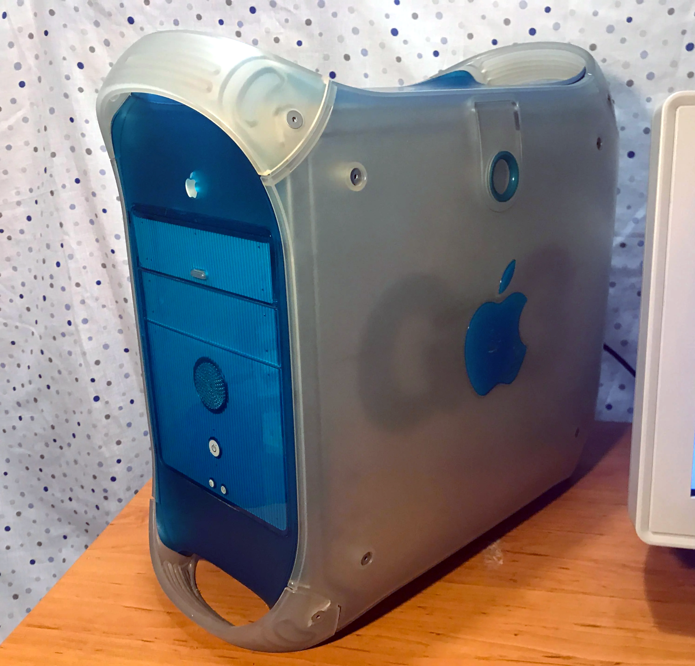

|  | CPU: 300 MHz PowerPC G3 750Memory: 320 MBStorage: 20 GB HDDGPU: ATI Rage 128 GL with 16 MB of VRAMOS: Mac OS 10.4.11 ServerCondition: Working perfectly |
I got this machine locally for cheap along with 3 other Graphite Power Mac G4s. At first it was completely dead so it sat for several months doing nothing. After that I figured it might be the PSU and it was. I got one from a Windows 2000 machine and it worked! It came with no RAM so I put some and a new HDD because the old one was dead. I've installed a lot of OSes over time on this thing (OpenBSD, Mac OS 9, Mac OS X Developer Preview 1 and 2, Tiger and now Tiger Server). This very site is hosted on it.